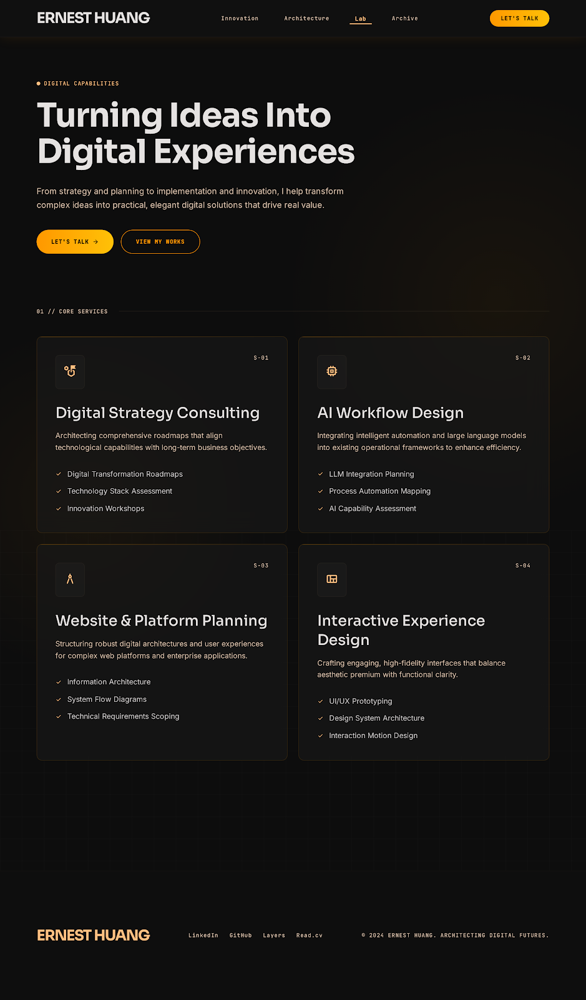

Digital Strategy Consulting
Roadmaps, transformation planning, and practical innovation direction.
Services / Digital Capabilities
From strategy and planning to implementation and innovation, each service is structured to create practical business value.

Roadmaps, transformation planning, and practical innovation direction.
Automation, LLM integration planning, and process intelligence.
Information architecture, system flows, and technical requirements.
UI/UX prototyping, design systems, and interaction motion direction.